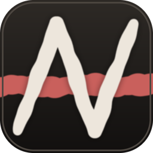

Windows
Windows 10 or 11 · 64-bit
DownloadGet the latest release
Installs for you only — no administrator prompt.

An NVR with the AI built in — faces, number plates, sound and search, all of it on your own machine. Rust underneath, Tauri on top.
Audio is classified alongside the picture — glass, alarms, a raised voice, a barking dog — against the 521-class AudioSet ontology, on any camera whose stream carries sound.
Every camera writes to disk without pause, so the approach, the hesitation and the walk away are all there — not just the moment something crossed a threshold.
Enrol a face once and Anivar names it on sight. Number plates are read and matched to names you choose. When it is uncertain it tells you, and shows what the decision rested on.
Search by what was in the frame rather than by the hour it happened. Ask Anivar in plain language and the footage comes back with it. When the archive genuinely holds nothing, it says so.
The bot is yours. Every link it sends is cryptographically signed and carries an expiry, and one action revokes every link ever issued. Quiet hours and per-camera rules decide what earns an interruption.
The engine is Rust and the interface draws through the operating system's own webview, so it opens and behaves like the rest of your desktop. Detection runs on your graphics card where there is one.
Recording, recognition and search happen on the same machine that holds the footage. It works the same on a disconnected network as it does on yours.
Detail
Windows is the platform it is developed and tested on. On Linux the models run on the processor today. Models download when you ask for them, and each shows its licence first.
Free, open source, and yours to keep. Pick your system — each card shows the exact file you get and what it needs.
Windows 10 or 11 · 64-bit
DownloadGet the latest release
Installs for you only — no administrator prompt.
macOS 11 or later · Apple Silicon
DownloadGet the latest release
Intel Macs are not supported yet.
64-bit · Ubuntu 22.04 / Debian 12 or newer
DownloadGet the latest release
Other package formats
The AppImage is portable — chmod +x and run.
Every download has a SHA-256 published beside it, and installed copies update themselves. Release notes and checksums.
These builds are not signed by a certificate authority, so Windows and macOS each ask once before opening a new app. What to click.